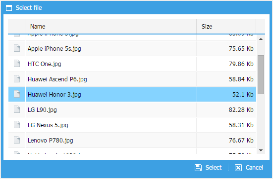
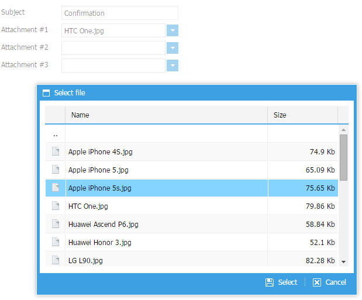
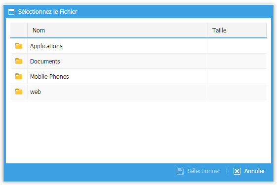
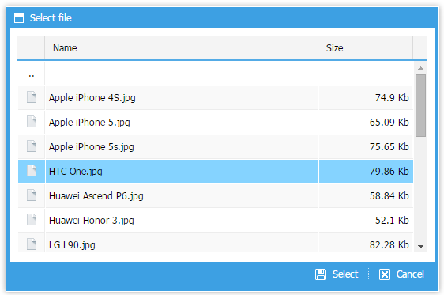
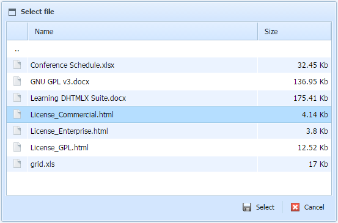
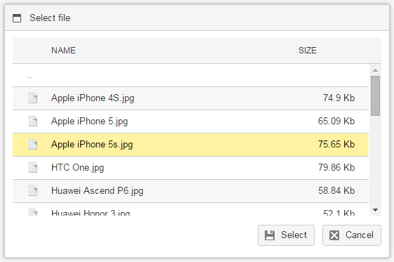

dhtmlxFileSelector is a macro component that allows navigating a computer file system in a handy way.
Due to rich select functionality, it provides the possibility to find and select the necessary file.

To create a FileSelector on a page, complete the following steps:
1) Include dhtmlx.js/css and dhtmlxfileselector.js/css on your page.
Note that dhtmlx.js and dhtmlx.css lines should go before dhtmlxfileselector js/css:
<head>
<link rel="stylesheet" type="text/css" href="codebase/dhtmlx.css"/>
<link rel="stylesheet" type="text/css" href="codebase/dhtmlxfileselector.css"/>
<script src="codebase/dhtmlx.js"></script>
<script src="codebase/dhtmlxfileselector.js"></script>
</head>
2) Create a FileSelector instance:
var myFileSelector = new dhtmlXFileSelector({
url: "reader.php", // url to get data
image_path: "codebase/imgs/", // path to grid images
icons_path: "codebase/imgs/" // path to toolbar icons
});
3) After FileSelector initialization attach the onSelect event to handle a selected file:
var myFileSelector.attachEvent("onSelect", function(id){
// your code here
});
4) Show dialog window:
myFileSelector.show();
It is possible to use FileSelector as a part of dhtmlxForm:

To integrate the two components, use the following configuration:
var formData = [
{
type: "fileselector",
...,
url: "data_static.php",
image_path: "codebase/imgs/",
icons_path: "codebase/imgs/",
full_path: true
},
... other form items
];
var myForm = new dhtmlXForm("parentId", formData);
FileSelector can be presented in different languages, which can be dynamically switched. FileSelector includes localization support for buttons, windows caption and grid columns.

Firstly, you should specify the settings of the necessary language as follows:
// specifying settings of some language, e.g. French
// make sure that dhtmlxfileselector.js is loaded
dhtmlXFileSelector.prototype.langData.fr = {
ok: "Sélectionner",
cancel: "Annuler",
caption: "Sélectionnez le Fichier",
col_name: "Nom",
col_size: "Taille"
};
If you have settings of several languages defined, you can switch between them by means of the loadUserLanguage method which takes a two-letter string of language name as a parameter:
myFileSelector.loadUserLanguage("fr");
If you'd like to apply language settings once for all FileSelector instances, use the code as in:
// make sure dhtmlxfileselector.js is loaded
dhtmlXFileSelector.prototype.lang = "fr";
There are three types of skins available for FileSelector:



The skin "dhx_skyblue" is used by default. Depending on the attached CSS skin file, FileSelector will try to detect the skin automatically. If you have several attached css files, you need to force skin during initialization:
var myFileSelector = new dhtmlXFileSelector({
skin: "dhx_web"
});